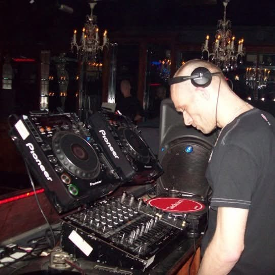

DJ Sonic
With roots tracing back to the mid-90s underground scene, DJ Sonic has spent decades mastering everything from Acid House, Hardcore, and Jungle, to UKG and Drum and Bass. This extensive genre fluidity gives him an innate understanding of the dancefloor, allowing him to read any crowd and seamlessly elevate the energy of any room.
